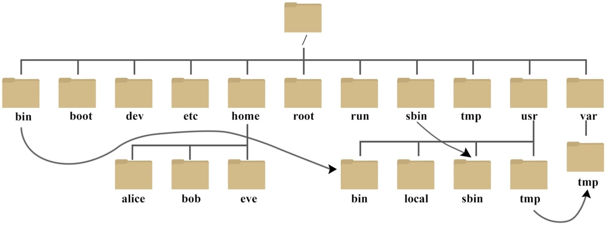

Linux基础
约 2624 个字 2 行代码 2 张图片 预计阅读时间 9 分钟
Abstract
重点是在于熟练掌握常见的命令，在Shell中进行各种操作!
Why Linux?
- 内核稳定，社区维护
- free(开源) & 轻量级 & 稳定性 & 兼容性
Shell 简介
黑黑的窗口？输入奇怪命令的地方？ → No! 这其实是 Terminal
Quote
" sense of "device for communicating with a computer" is first recorded 1954. ————Online Etymology Dictionary
Terminal：一个应用程序，提供了一个窗口和输入输出交互的功能
- 内部运行的才是Shell，即Shell执行输入的命令得到输出的东西
常见的Terminal:
- Windows: Windows Terminal（推荐）
- Linux: Gnome Terminal、Konsole、LXTerminal等
- MacOS：Terminal.app、iTerm2（推荐）
- 跨平台: Alacritty（基于Rust），Warp （基于Rust）
那么什么是Shell？
它也是一个程序，是用户与系统内核交互的界面。负责接受并解析输入，交给更底层的OS来执行，并返回输出
常见的shell:
- Windows: cmd.exe、PowerShell
- *nix下
- sh: Bourne Shell，最早、最经典的 shell
- bash: Bourne Again Shell，最常用的 shell（Linux默认）
- zsh：Z Shell，功能强大、可高度自定义的 shell
- fish：Friendly Interactive Shell，开箱即用、全平台的 shell
- ...
总结来说：Terminal获取输入，然后传递给Shell，等待Shell处理完后，将结果再传递回用户（显示在屏幕上），Shell 从 Terminal拿到输入，解析后交给OS执行，然后将结果返回给 Terminal
命令行也是操作计算机的方式,可做任何事情。 若没有显示器，只能通过命令行(e.g.SSH)
Shell 基础命令
- 查看内核版本：
$ uname -a; 查看发行版版本：$ cat /etc/issue
一定要关注自己在哪执行的命令 → pwd 获取当前路径，而~代表当前用户的"home"(家)目录
- 要关注当前的用户，是普通用户还是root? 有的信息和权限相关
在*nix中没有分盘的概念，所有文件都挂载到唯一的根目录 / 下

cd path 切换路径
{kind=link}
- path: 可以是相对路径，也可以是绝对路径
- path中
~代表home,.代表当前路径，..上一级路径，-上一次目录
用户配置
两种用户: root 和 普通用户
- root的命令提示符为
#，而普通用户为$ - 切换到root用户：
su root - 更改root密码
sudo passwd root
whoami 显示自身用户名称；who am i 显示登录用户的用户名以及登陆时间
cat /etc/passwd查询已存在的所有用户- 某列展示为
yh:x:1000:1000:ubuntu_64,,,:/home/yh:/bin/bash:- (用户名:密码:uid:gid:xxx:家目录:shell版本 )
- 某列展示为
- 真正的密码可通过此命令查看：
cat /etc/shadow（但是密文形式）
useradd bob 添加新用户bob(只能root或者sudo才可以执行) → 配密码sudo passwd bob
- 存在问题：没有家目录，并且用的sh而非bash（sh没有tab补全）
- 解决：
useradd test -m -s /bin/bash
怎么知道添加成功了？ → cat /etc/passwd 将显示添加的用户名
userdel bob 删除用户bob （-r 选项会删除对应家目录）
Tips
Shell中，Ctrl + A 光标回到开头，Ctrl + E回到结尾
要多运用man来进行查看相关命令的参考手册
文件/目录操作
ls 列出当前路径下的文件和目录
-a：列出所有文件和目录，包含隐蔽文件-l：列出详细信息(权限，大小，修改时间...)
ls -l内容说明
drwxr-xr-x 21 yh yh 4096 Dec 2 21:59 yh
- 文件类型:
d目录，-普通文件，l符号链接... - wxr-xr-x ： 文件权限信息（读/写/执行）
- 21: 硬链接数（此处表示该目录中有多个子目录或文件）
- yh: 文件所属用户
- yh: 文件所述用户组
- 4096：文件大小(byte)
- Dec 2 21:59 最后修改时间
- yh: 此文件或目录名称
硬链接和源文件是同一份文件，而软链接是独立的文件(类似于快捷方式)，存储着源文件的位置信息便于指向
touch file 创建一个文件
mkdir file 创建一个目录
cp src dst 复制文件或目录，-r 递归复制目录
mv src dst 移动文件或目录(也可重命名)
rm files 删除文件，-r 递归删除目录; -f 强制删除；谨慎.rm -rf ./*
chmod 改变目录或文件的权限 → chmod [u/g/o][+/-/=] [r/w/x]
- e.g.
chmod +x file给file加上可执行权限
{kind=link}
PS: 若dir1目录有file1，删除file1则需要dir1的写权限，新增也同理
- （目录在磁盘中是链表形式，保存了孩子节点即目录里的文件）
find
文件查找: find 起始目录 查找条件 操作 e.g. find /usr/include/ -name "stdio.h"
- 根据名称和文件属性来查找
-type x查找类型为x的文件- x可为b(块设备)、c、d、p(管道)、f(regular file)、l、s(socket)
-empty查找大小为 0 的目录或文件-name file查找文件名为file的所有文件，可用通配符*、?、[]-size n[cwbkMG]n是要查找的文件大小（n前面可用+/-表示大于或小于）
- 按照时间查找
-amin n：查找n分钟以前 被访问过 的所有文件- （+表示n分钟之前，-表示n分钟之内，都不能省）
-cmin n查找n分钟以前 文件状态 被修改过的所有文件-mmin n查找n分钟以前 文件内容 被修改过的所有文件- e.g. 12h内是否有人修改相关内容：
find - mmin -720
- e.g. 12h内是否有人修改相关内容：
- 其他查找条件：
-user/-uid/-group/-gid/-perm(参考man手册) - 也可以进行组合：
-a(交集)、-o(并集)、!(补集)
文件查看及处理操作
cat file 查看file文件的内容
-b对非空输出行编号-n对输出的所有行编号
head/tail -n number file 显示文件file内容的前number行/后number行
less / more 单页浏览文件 f下一页,b上一页
sort file 对文件内容进行排序（字母表）
file 文件名 查看文件内容的类型
uniq 文件名 删除文件中重复的行（必须连续着）
- 若重复行之间不并不连续 →
sort file | uniq
wc file 统计文件的行数(-l)、字数(-w)和字节数(-c)
tar 打包和压缩
tar {A|c|d|r|t|u|x}[GnSkUWOmpsMBiajJzZhPlRvwo] [arg..]c创建r追加x释放-
v显示过程f指定名字zgzip算法压缩 -
e.g. 压缩：
$ tar zcvf file.tar file1 file2- 解压：
$ tar zxvf file.tar
- 解压：
vimdiff file1 file2 对文件进行对比（合并代码会用到）
grep
grep [options] pattern [files] 查找符合某正则表达式的文件内容（⭐️⭐️⭐️）
- pattern 要查找的正则表达式 (基本单位 + 运算符)
- 基本单位：普通字符(
a~z,0~9)、连接操作(e.g.ab普通字符组合一块)、 任何一个字符(.)、[]某集合，表示里面的任意字符或数字 - e.g.
grep -nE "hello" file.txt在file.txt中查找字符串 "hello" -n代表显示行号，-E代表使用拓展的正则表达式规则
- 基本单位：普通字符(
- 运算符
?： (基本单位后跟?)表示出现了0次或1次- 若
ab?表示b出现0或1次，若(ab)?整体出现0或1次
- 若
- 运算符
*：(基本单位后加*)表示出现0次或无穷次 - 运算符
+: (基本单位后加+)表示出现1到无穷次 - PS: 还有表示位置的运算符，以及
|运算符(左右两边需为正则)
（多用man，然后检索regular expression查看具体语法）
- 正则属于图灵完备，可以写出任何代码，
但简单了解即可
iconv -f gb2312 -t utf-8 1.txt 对文件内容由gb2312编码转为utf-8
其他一些命令
Abstract
Linux命令众多，仅仅记录常用的。若又有新的了解，随时补充!
alias 给某命令起别名(临时的)
- 设置
alias ls="rm -rf"(故意坑人笑死)
> 重定向：0(stdin)、1(stdout)、2(stderr)
find . -name "text" &> file&代表把所有的重定向到file中>>追加重定向<输入重定向（OJ评测原理）
磁盘管理
df -h 显示文件系统的整体磁盘空间使用情况
du [选项] [文件名] 显示每个文件或目录的磁盘使用情况
-s只显示总和；-h以易读的方式显示；-d表示深度
远程copy(上传&下载)
scp filename username@ip:path scp远程复制文件，e.g. scp file yh@192.168.10.129:~
- filename本地要复制的文件名称，若是目录加上
-r - username目标主机名
- path: 要复制到的目标主机路径
反过 来 scp yh@192.168.10.129:/home/yh/scp_test .
- 远程主机的文件，copy至当前主机目录下
网络管理
ifconfig 查看和配置网络设备
- 若报错，可能需要安装
sudo apt install net-tools
route 查看与设置路由
进程管理
ps aux | grep xxx 查看系统中所以进程（一般都会加上grep，查看某些相关进程）
ps -ef | grep xxx 查看父子进程直接的关系
- a 列出带有终端的所有用户的进程
- x 列出当前用户的所有进程，包括没有终端的进程
- u 面向用户友好的显示风格
- e 列出所有进程
- u 列出某个用户关联的所有进程
- f 显示完整格式的进程列表
kill [option] PID 杀死进程
pstree [option] 查看进程树，-p 显示PID，-u显示进程所属用户
top 实时监控系统进程状态
netstat 显示网络状态和端口占用信息
netstat -anp | grep 进程号（查看该进程网络信息）netstat –nlp | grep 端口号（查看网络端口号占用情况）
命令的组合
顺序执行多个命令用; e.g.mkdir dir; touch dir/file
| : 管道，将一个程序或命令的输出作为另一个程序或命令的输入
cmd1 | cmd2cmd1原本stdout内容重定向管道中，cmd2原本stdin内容从管道中获取- e.g.
sort file | uniq对file进行排序并去重
xargs ：将标准输入转为命令行参数
- 单独使用，输入
xargs后摁↩等待用户输入，输入后按ctrl+d展示相应结果- 另:
xargs ls -al按↩︎，再输入dir，ctrl+d之后将展示dir1目录内容 - (等价
ls -al dir)
- 另:
- 主要是与管道进行结合使用
- 如: 搜索某目录下若干个
.c文件中的main的位置find -name . "*.c" | xargs grep -nE "int.*main\(.*\)(\代表转义)- find找到所有的.c文件，通过管道给xargs，然后每个.c文件通过grep进行查找mai
- 如: 搜索某目录下若干个
命令替换
cmd1 `cmd2` 等价 cmd1 $(cmd2)
# 先执行cmd2，再把其结果作为cmd1的参数
例子: $ date +%y%m%d | xargs mkdir (会创建名为当前年月日的目录)
等价 $ mkdir $(date +%y%m%d)
颜色主题调整
快来和我聊天~
可以的话请给我赞和 star喔~ =>